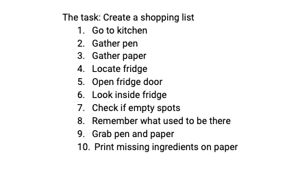
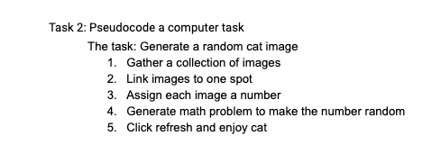

Lab 4: Pseudocoding and Problem-Solving
The purpose of this lab was to learn how to psuedocode. We started with an everyday task then moved on to more complex, like creating a task for a computer to do.
Challenges
This lab was actually pretty difficult at first because me partner and I have never even used Javascript and we were a bit confused by the instructions. The every task we ended up choosing was "to create a shopping list."
Results
Here are the lists that we came up with, along with screenshots and captions for what we did.
Below is the first task we psuedocoded. This outline was to create a shopping list, which we tried to make as basic as possible.
This is the next task we psuedocoded. For this outline we wanted to make a computer generate a random cat image every time we refreshed the page. Although this is something we don't know how to yet, we figured that it is something we will learn during this semester.
This it the psuedocode we came up with together. We couldn't figure out how to make it appear on the page through javascript so as mentioned on the assignments page, we used the "pre" feature in html to format what we had written shown below.
//Gather a collection of images // Save image list //Link images to one spot //Assign each image a number //Generate math problem to make order random //Click refresh and enjoy cat
After searching on google for a bit, we found this tutorial created by Web Developer Nicole J. Tirado. It pretty much has the correct steps for us to implement our computer task through Javascript.